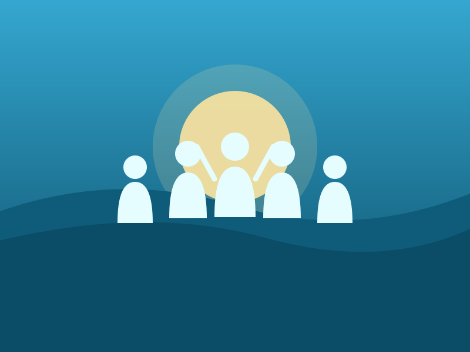
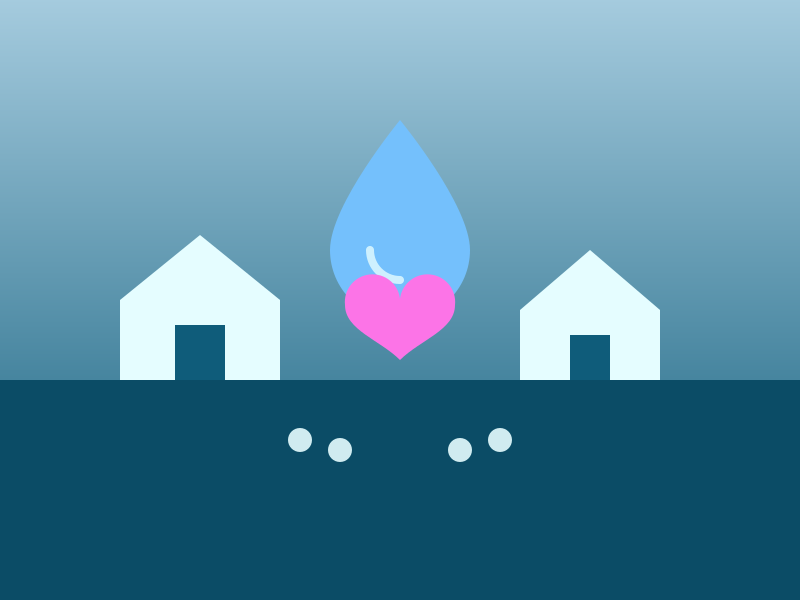
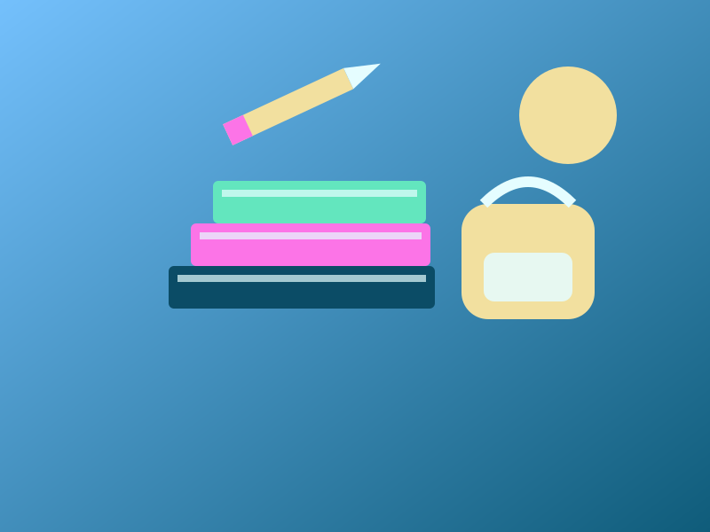
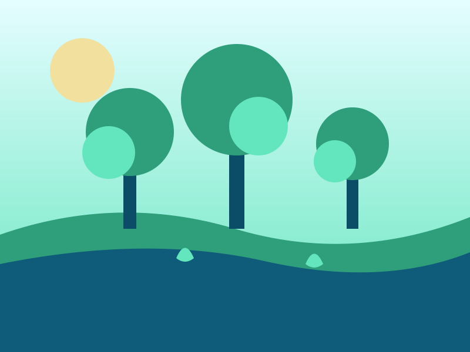
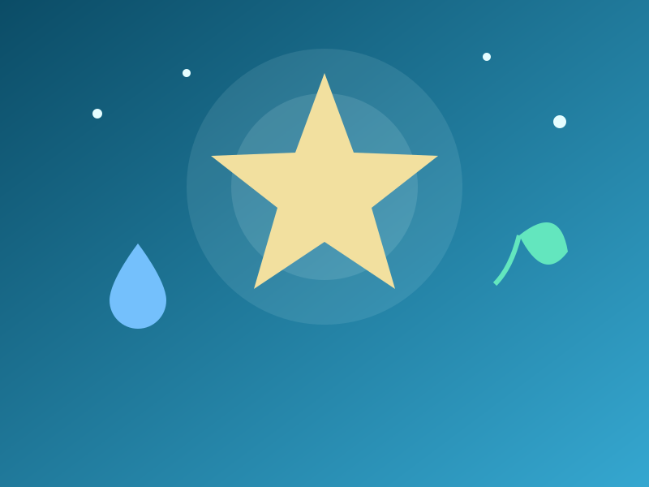

Our projects are designed to create lasting impact on communities that need it most.

BIC Youth Action Program
Youth Leadership & Community Service November–July

BIC Community Outreach
Community Service Year-round (major focus in May)

BIC Back-to-School Support
Educational Support Main activity in August

BIC Green Communities Program
Environmental Action June–July (ongoing focus)

BIC Special Projects
Special Initiatives As opportunities arise
DO NOT APPLY IF YOU WILL NOT COMMIT; PLEASE DO NOT.
BIC Youth Action Program
Duration: November–July Target participants: African youth aged 15–20 Program type: Youth leadership and community action
Program Overview
The BIC Youth Action Program empowers young Africans to identify and address challenges in their communities related to clean water, hygiene and sanitation, waste management, and environmental sustainability.
Throughout the program, participants take action within their own communities through awareness campaigns, community service, educational activities, and practical initiatives that support BIC's mission.
Rather than simply learning about these issues, participants are encouraged to become active changemakers who turn their ideas into meaningful community action.
Activities & Timeline
November 30: Youth orientation and program introduction.
December: Clean Water Action
January: Hygiene & Sanitation Action
February: Waste management Action
March: Environmental sustainability Action
April: From Problem to Solution Innovation Workshop
May: Community Action
June: Youth Advocacy & Leadership
July: Impact & Graduation
Note:At the beginning of each month, participants will attend a mentorship meeting to learn more about the month's activities and how to carry them out.
At the end of each month, participants will submit an activity report with supporting evidence, such as photos and social media posts, followed by a review meeting.
Participants should plan for approximately 4 hours of scheduled meetings per month, in addition to flexible time for community activities and project implementation
Eligibility & Requirements
Be between 15 and 20 years old at the time of application.
Be an African citizen.
Be willing and able to commit to the full program duration
Commit to 4 hours per month for meetings, plus flexible hours to carry out your community activities.
Demonstrate an interest in community service, environmental sustainability & public health education.
Have access to a community where you can carry out activities
Be willing to participate in program activities, submit progress updates monthly, and report on your community impact.
What You Will Gain
A certificate of participation, subject to meeting the program's completion requirements.
Awards and recognition for the best community projects.
Funding support for outstanding projects, where available (funding is not guaranteed).
Hands-on experience planning and leading a real community project.
Leadership, public speaking, teamwork, communication, and problem-solving skills.
Guidance and mentorship from the BIC team.
Practical knowledge of clean water, hygiene, sanitation, waste management, and environmental sustainability.
A network of young changemakers who share your passion for community impact.
The opportunity to have your project and story featured in BIC communications, with your consent.
A stronger profile for future scholarships, internships, and leadership opportunities.
Application Status
BIC Community Outreach
Schedule: Year-round, with periodic outreach activities and a major annual focus in May. Program type: Community service and family support
Program Overview
BIC Community Outreach brings Volunteers into underserved communities to support families through essential donations and practical education.
Through community visits, we aim to help families improve their understanding and everyday practices related to clean water, hygiene, sanitation, and proper waste management.
Activities may include distributing essential supplies, demonstrating safe hygiene practices, educating families about water safety, and promoting responsible waste disposal.
Activities
Visits to underserved families and communities.
Distribution of essential supplies and donations.
Clean water and safe water storage education.
Hygiene and sanitation awareness.
Household waste-management education.
Community engagement and follow-up activities.
Eligibility & Requirements
Be living in Cameroon.
Be willing to commit to the responsibilities assigned to you.
Be available on the dates of the outreach activity.
Apply as an individual or as a representative of an organization.
Volunteers are selected for each activity, and applications open only when BIC needs additional volunteers.
What You Will Gain
A certificate of volunteer participation, subject to completing your assigned responsibilities.
Hands-on experience in community outreach and family engagement.
Skills in communication, teamwork, planning, and community education.
Practical knowledge of clean water, hygiene, sanitation, and waste management.
The chance to make a real difference in the lives of underserved families.
Connections with other volunteers and community-minded organizations.
Recognition for your contribution to BIC's work.
Application Status
BIC Back-to-School Support
Schedule: Year-round planning, with the main annual activity in August. Program type: Educational support and community outreach
Program Overview
BIC Back-to-School Support aims to assist children from underserved communities and orphanages as they prepare for a new academic year.
Through the distribution of school supplies and educational outreach, the program seeks to help children begin the school year better equipped while encouraging healthy everyday practices.
Alongside school supply donations, children will receive age-appropriate education on clean water, hygiene, sanitation, and proper waste management. The goal is to encourage them to apply these lessons at school, at home, and throughout the academic year.
Activities
Distribution of school supplies to children in underserved communities and orphanages.
Collection of school materials through donation drives.
Visits to selected schools, orphanages, and communities.
Hygiene and sanitation awareness sessions.
Education on safe water practices.
Waste-management and environmental awareness activities.
Eligibility & Requirements
Be living in Cameroon.
Be willing to commit to the responsibilities assigned to you.
Be available during the preparation and distribution period, mainly ahead of and during August.
Apply as an individual or as a representative of an organization.
Volunteers are selected for each activity, and applications open only when BIC needs additional volunteers.
What You Will Gain
A certificate of volunteer participation, subject to completing your assigned responsibilities.
Hands-on experience in donation drives, logistics, and distribution.
Experience teaching children about hygiene, sanitation, and safe water practices.
Skills in teamwork, organization, communication, and fundraising.
The joy of helping children start the school year better equipped.
Connections with other volunteers, schools, and orphanages.
Recognition for your contribution to BIC's work.
Application Status
BIC Green Communities Program
Main annual activity period: June–July Ongoing focus: Environmental sustainability throughout the year. Geographic focus: Communities across multiple regions of Cameroon, depending on available resources and local partnerships.
Program Overview
The BIC Green Communities Program promotes environmental sustainability by mobilizing young people and community members to take practical action toward cleaner, greener, and more sustainable communities.
While June and July will be the main periods for coordinated activities, environmental awareness and community engagement will remain an ongoing focus throughout the year.
BIC aims to expand these activities across as many regions of Cameroon as resources, partnerships, and volunteer capacity allow.
Activities
Community clean-up campaigns.
Tree-planting initiatives.
Waste collection and responsible disposal awareness.
Environmental education in schools and communities.
Distribution of environmental awareness posters and flyers.
Public awareness campaigns promoting cleaner communities.
Youth-led environmental projects.
Community engagement to encourage sustainable everyday practices.
Eligibility & Requirements
Be living in Cameroon.
Be willing to commit to the responsibilities assigned to you.
Be available on the dates of the campaign you volunteer for.
Apply as an individual or as a representative of an organization.
Volunteers are selected for each activity, and applications open only when BIC needs additional volunteers.
What You Will Gain
A certificate of volunteer participation, subject to completing your assigned responsibilities.
Hands-on experience in clean-ups, tree planting, and environmental campaigns.
Skills in environmental education, teamwork, communication, and campaign planning.
Practical knowledge of waste management and environmental sustainability.
The chance to leave your community cleaner and greener.
Connections with other environmentally minded volunteers and partners.
Recognition for your contribution to BIC's work.
Application Status
BIC Special Projects
Schedule: As opportunities arise. Program type: Grant-funded, partner-supported, or specially organized initiatives.
Program Overview
In addition to its regular programs, Bright Impact Community undertakes special projects that respond to emerging community needs and opportunities for collaboration.
These projects may be supported by grants, partnerships, donations, or other funding opportunities. Each special project will have its own objectives, activities, implementation period, and participation requirements.
What each special project announcement includes
Project name and description.
Objectives and planned activities.
Location and implementation period.
Funding or partnership information, where appropriate.
Volunteer eligibility requirements.
Application opening and closing dates.
Eligibility & Requirements
Be living in Cameroon.
Be willing to commit to the responsibilities assigned to you.
Meet any additional requirements announced for the specific project.
Apply as an individual or as a representative of an organization.
What You Will Gain
A certificate of volunteer participation, subject to completing your assigned responsibilities.
Experience working on grant-funded or partner-supported projects.
Skills in project coordination, teamwork, and community engagement.
The opportunity to work with BIC's partners and supporters.
The chance to contribute to a project that responds to a real community need.